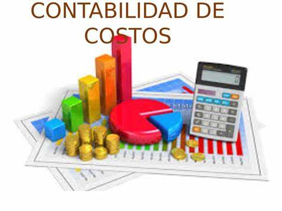

Tipos de contabilidad
La contabilidad es una disciplina que estudia, mide y analiza el patrimonio y la situación económica de una empresa para facilitar la toma de decisiones internas y el control externo.
| # | Tipo de contabilidad | Imagen | Defenicion | Reportes principales | 1 | Financiera |  |
Consiste en la recopilación, organización y registro de la información de la actividad económica de una organización, con el fin de tener todo cuantificado y archivado. | Balance General (Estado de Situación Financiera): Muestra los activos, pasivos y el patrimonio de la empresa en un momento específico, proporcionando una visión de su solidez financiera | 2 | costo |  | Es un sistema de información que se usa para determinar, registrar, controlar, analizar, e informar todo lo relacionado con los costos de producción, distribución, venta, administración y financiamiento. | Informe de Costo de Producción: Detalla los costos incurridos en el proceso de fabricación de un producto, incluyendo materias primas, mano de obra directa y costos indirectos de fabricación. Proporciona información sobre el costo unitario de producción. | 3 | Administrativa | Es un sistema de información al servicio de las necesitades internas (socios, directorios, trabajadores) de la administración, orientado a facilitar las funciones administrativas de planeación y control, así como la toma de decisiones. | El Presupuesto Maestro: Este informe integra todos los presupuestos de la empresa, incluyendo ventas, producción, costos, gastos operativos, y flujo de caja, proporcionando una visión completa y coordinada de las operaciones para un período específico. |
|---|
Ecuación Contable:
Activos = Pasivos + Patrimonio
La ecuacion contable Establece la relación entre los principales elementos financieros de una empresa.
Ver video en YouTubeProceso Administrativo
Planeacion,Organizacion, Direccion, control
El proceso administrativo es un conjunto de funciones administrativas dentro de una organización u empresa que buscan aprovechar al máximo los recursos existentes de forma correcta, rápida y eficaz.
Ver video en youtubeClasificación de las cuentas
Activo, Pasivo y Capital
cada cuenta contable tiene un nombre unico que se asigna para dar una idea clara y precisa del concepto de controlar
Ver video en youtube